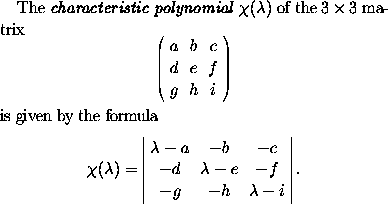
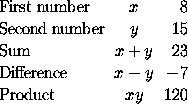
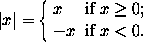

Matrices and other arrays are produced in LaTeX using the \textbf{array} environment. For example, suppose that we wish to typeset the following passage:
This passage is produced by the following input:
The \emph{characteristic polynomial} $\chi(\lambda)$ of the
$3 \times 3$~matrix
\[ \left( \begin{array}{ccc}
a & b & c \\
d & e & f \\
g & h & i \end{array} \right)\]
is given by the formula
\[ \chi(\lambda) = \left| \begin{array}{ccc}
\lambda - a & -b & -c \\
-d & \lambda - e & -f \\
-g & -h & \lambda - i \end{array} \right|.\]
First of all, note the use of \left and \right
to produce the large delimiters around the arrays. As we have
already seen, if we use
then the size of the parentheses is chosen to match the subformula that they enclose. Next note the use of the alignment tab character\left)...\right)
& to separate the entries of the matrix and
the use of \\ to separate the rows of the matrix, exactly
as in the construction of multiline formulae described above.
We begin the array with \begin{array} and end it with
\end{array}. The only thing left to explain, therefore,
is the mysterious {ccc} which occurs immediately after
\begin{array}.
Now each of the c's in {ccc} represents a
column of the matrix and indicates that the entries of the
column should be centred. If the c were replaced by
l then the corresponding column would be typeset with
all the entries left-justified, and r would produce a
column with all entries right-justified. Thus
\[ \begin{array}{lcr}
\mbox{First number} & x & 8 \\
\mbox{Second number} & y & 15 \\
\mbox{Sum} & x + y & 23 \\
\mbox{Difference} & x - y & -7 \\
\mbox{Product} & xy & 120 \end{array}\]
produces

We can use the array environment to produce formulae such as
Note that both columns of this array are set flush left. Thus we use
{ll} immediately after \begin{array}. The
large brace is produced using \left\{. However this
requires a corresponding \right delimiter to match it.
We therefore use the \emph{null delimiter} \right.
discussed earlier. This delimiter is invisible. We can
therefore obtain the above formula by typing
\[ |x| = \left\{ \begin{array}{ll}
x & \mbox{if $x \geq 0$};\\
-x & \mbox{if $x < 0$}.\end{array} \right. \]